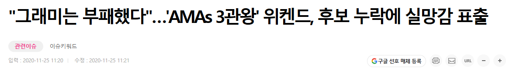
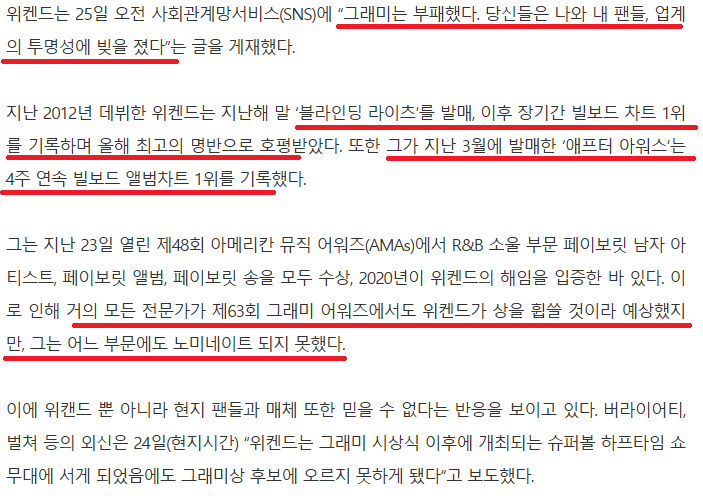
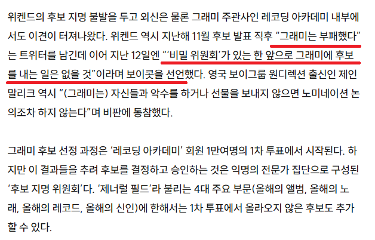
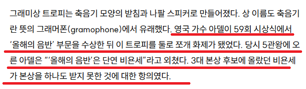

'The Weeknd - Blinding Lights'
그건 바로 위켄드
- 빌보드 핫 100 출범 63년 만에 역사상 최초로 1년간 TOP 10을 기록한 최초의 싱글
- 빌보드 핫 100 차트에서 기록한 'Top 10(10위권 내) 57주 체류'
위켄드의 Blinding Lights는 2020년 2월 29일에 차트 10위 안으로 진입했으며
2021년 제63회 그래미 당시 TOP10 52주를 기록 (이후 최종 57주 기록)
이라는 대기록을 세웠고
한 해 동안 가장 핫했던 최고의 아티스트만 출연할수있다던 슈퍼볼 하프타임 공연이 잡혀있었음
그런 위켄드가 2020년 'Blinding Lights'와 앨범 《After Hours》으로 차트를 휩쓸었지만
그래미 어워드 단 하나의 부문에도 후보로 오르지 못하는 이변이 발생함



당연히 위켄드는 개빡쳤고
그래미가 부패했다고 비난하며 비밀위원회가 있는한 그래미에 후보를 내는 일은 없을것이라며 보이콧을 선언함
이 사태로 인해 그래미에 대한 대중과 아티스트들의 신뢰가 크게 떨어졌으며, 2021년 시상식은 역사상 최저 수준의 시청률을 기록하는 등 큰 오명을 남김
이후 그래미 측은 논란이 된 비밀 위원회 제도를 폐지함

그래미 이새끼들이 음습한건 하루이틀이 아니었고
이번에 논란이된 BTS 보이콧부터 이번 글의 주제인 위켄드뿐만아니라
그 이전에도 말들이 많았었음
2021 슈퍼볼 하프타임 영상으로 글을 마침
그럼 즐거운 주말 보내세요
동영상을 재생할 수 없음